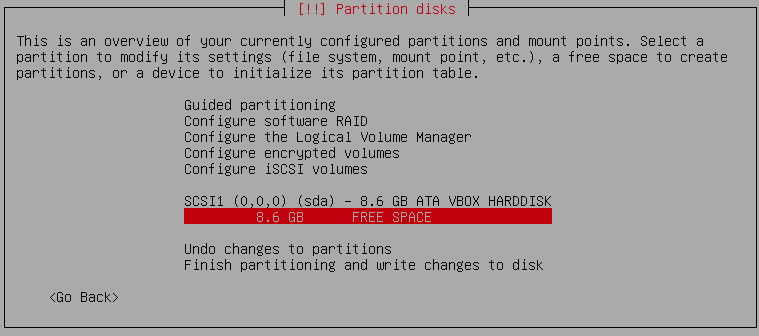
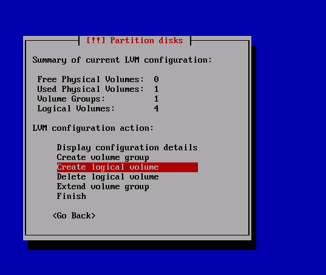

En esta práctica llevaré a cabo la instalación de Debian 11 Bullseye en mi equipo, que ya dispone de Windows 10. Además, en lugar de realizar un particionado estándar del disco duro, se hará en formato de LVM (volúmenes lógicos).
 En un futuro podremos ampliar o reducir el espacio de cada partición.
En un futuro podremos ampliar o reducir el espacio de cada partición.
Instalación de Debian 11 en LVM
Antes de comenzar con la instalación, he reducido el espacio que tengo asignado a Windows y he dejado libre 150GB para Linux.
Si estudias en el IES Gonzalo Nazareno, con eso te quedas corto.
Comenzamos la instalación como haríamos normalmente, y seguimos adelante hasta que llegamos a la sección del particionado.

Aquí, elegimos el espacio libre que vayamos a usar para Debian y le damos formato de LVM. A continuación, nos vamos a la configuración de volúmenes lógicos que encontraremos en la parte superior de la pantalla (Configure the Logical Volume Manager, o en español, Configurar el Gestor de Volúmenes Lógicos).

Creamos un volumen físico con la partición que hemos seleccionado antes. Luego, creamos un grupo de volúmenes, al que damos un nombre, y de este empezamos a sacar todos los volúmenes lógicos que necesitemos en función de las particiones que vayamos a crear. En mi caso, he generado las siguientes particiones:
- raiz (40GB)
- home (30GB)
- var (80GB, puesto que voy a trabajar con máquinas virtuales y estas se guardan en dicho directorio)
- usr (10GB)
- swap (1,1GB, que es el espacio que ha quedado al final, se recomienda no darle más de 4GB)
Nota: añadiría también una partición para la EFI, que sería donde instalaríamos el grub. No obstante, en mi caso no ha sido necesario porque, al tener Windows 10 en el disco, ya viene creada.
Cuando terminemos la configuración de los volúmenes lógicos, salimos y volvemos a la pantalla de particiones. A cada una de estas le damos un sistema de ficheros, como ext4 (excepto al área de intercambio, que la establecemos como tal) y seleccionamos su punto de montaje correspondiente. Finalmente, seguimos adelante hasta que finalicemos la instalación.
En mi caso, así queda el conjunto de particiones tras la instalación:
NAME MAJ:MIN RM SIZE RO TYPE MOUNTPOINT
sda 8:0 0 894,3G 0 disk
├─sda1 8:1 0 260M 0 part /boot/efi
├─sda2 8:2 0 16M 0 part
├─sda3 8:3 0 720,6G 0 part
├─sda4 8:4 0 1000M 0 part
├─sda5 8:5 0 21,4G 0 part
├─sda6 8:6 0 984M 0 part
└─sda7 8:7 0 150G 0 part
├─vg01-raiz 254:0 0 37,3G 0 lvm /
├─vg01-home 254:1 0 27,9G 0 lvm /home
├─vg01-var 254:2 0 74,5G 0 lvm /var
├─vg01-usr 254:3 0 9,3G 0 lvm /usr
└─vg01-swap 254:4 0 1016M 0 lvm [SWAP]
sr0 11:0 1 1024M 0 rom
Búsqueda e instalación de drivers
Al iniciar el sistema y ejecutar el comando hw-probe, el sistema analizará nuestro hardware y devolverá un enlace con información sobre los drivers que nos faltan. En mi equipo, por ejemplo, faltaban dos drivers, el de mi tarjeta de red de Intel (Dual Band Wireless-AC 3165 Plus Bluetooth) y el de la tarjeta gráfica de AMD (Topaz XT).
En el primer caso, tras realizar una búsqueda, he encontrado el driver correspondiente (iwlwifi) en la página oficial de Intel, y lo he instalado como cualquier paquete de Debian. En cuanto a la tarjeta gráfica, averigué que el driver que necesitaba era amdgpu, incluido en el paquete firmware-amd-graphics, tras lo cual me apareció como operativo en el informe de hw-probe.
En la imagen de abajo se puede ver el resultado del comando lspci tras instalar los dos drivers que faltaban:
00:00.0 Host bridge: Intel Corporation Xeon E3-1200 v6/7th Gen Core Processor Host Bridge/DRAM Registers (rev 02)
00:02.0 VGA compatible controller: Intel Corporation HD Graphics 620 (rev 02)
00:14.0 USB controller: Intel Corporation Sunrise Point-LP USB 3.0 xHCI Controller (rev 21)
00:14.2 Signal processing controller: Intel Corporation Sunrise Point-LP Thermal subsystem (rev 21)
00:16.0 Communication controller: Intel Corporation Sunrise Point-LP CSME HECI #1 (rev 21)
00:17.0 SATA controller: Intel Corporation Sunrise Point-LP SATA Controller [AHCI mode] (rev 21)
00:1c.0 PCI bridge: Intel Corporation Sunrise Point-LP PCI Express Root Port #1 (rev f1)
00:1c.4 PCI bridge: Intel Corporation Sunrise Point-LP PCI Express Root Port #5 (rev f1)
00:1c.5 PCI bridge: Intel Corporation Sunrise Point-LP PCI Express Root Port #6 (rev f1)
00:1f.0 ISA bridge: Intel Corporation Sunrise Point-LP LPC Controller (rev 21)
00:1f.2 Memory controller: Intel Corporation Sunrise Point-LP PMC (rev 21)
00:1f.3 Audio device: Intel Corporation Sunrise Point-LP HD Audio (rev 21)
00:1f.4 SMBus: Intel Corporation Sunrise Point-LP SMBus (rev 21)
01:00.0 Display controller: Advanced Micro Devices, Inc. [AMD/ATI] Topaz XT [Radeon R7 M260/M265 / M340/M360 / M440/M445 / 530/535 / 620/625 Mobile] (rev 83)
02:00.0 Ethernet controller: Realtek Semiconductor Co., Ltd. RTL8111/8168/8411 PCI Express Gigabit Ethernet Controller (rev 15)
03:00.0 Network controller: Intel Corporation Dual Band Wireless-AC 3165 Plus Bluetooth (rev 99)
Bibliografía y enlaces de interés
Debian. (2015, 22 diciembre). es/Firmware - Debian Wiki. Debian Wiki. https://wiki.debian.org/es/Firmware
Debian. (2021, 14 agosto). AtiHowTo - Debian Wiki. Debian Wiki. https://wiki.debian.org/AtiHowTo
Intel. (s. f.). Asistencia de Linux* para Adaptadores inalámbricos Intel®. Recuperado 18 de septiembre de 2021, de https://www.intel.es/content/www/es/es/support/articles/000005511/wireless.html